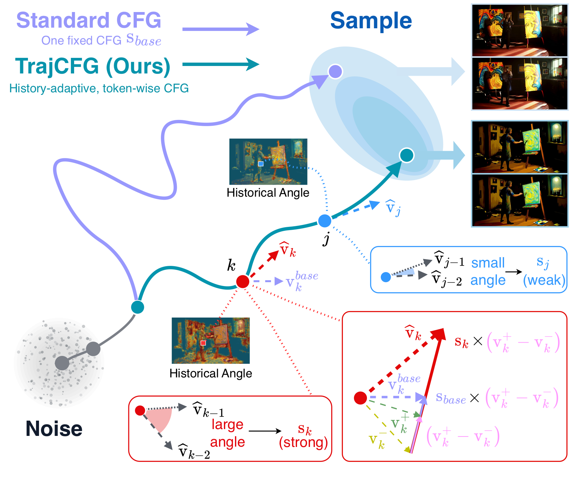
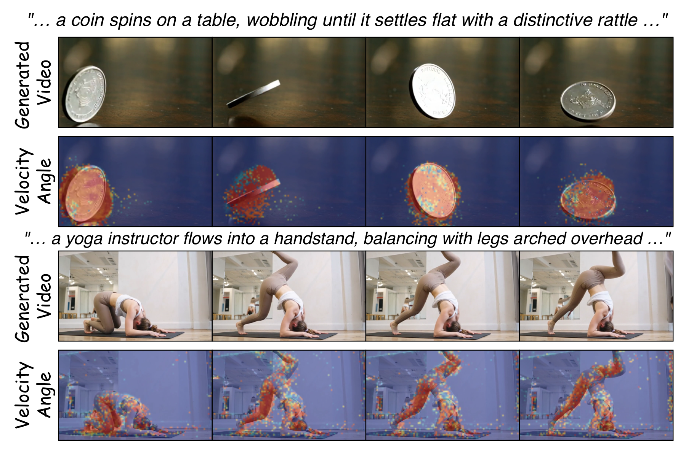
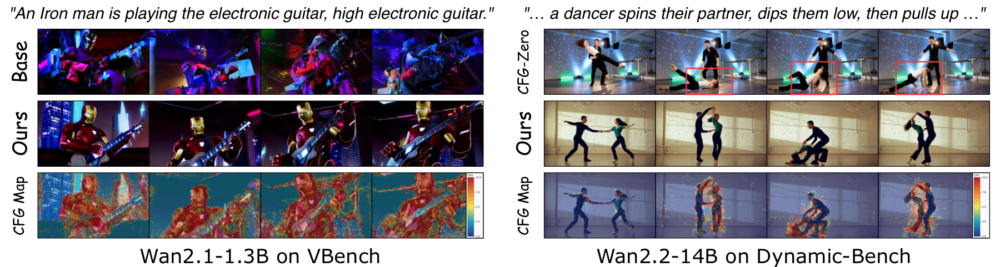
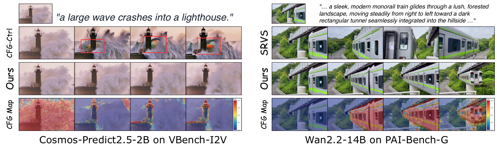

Read the trajectory
Measure token-level directional changes already produced along the denoising path.
Let every token follow the guidance it needs—using signals already present in its denoising history.

TL;DR
TrajCFG turns denoising history into a fine-grained control signal.
Classifier-free guidance typically applies a shared scale to all latent tokens, although their velocity predictions evolve differently during sampling. TrajCFG adapts guidance token by token using historical changes in guided velocity direction: larger directional changes receive stronger guidance, while more consistent trajectories receive weaker guidance.
The method combines adjacent-step and interval-normalized longer-span feedback, reuses standard CFG predictions, and requires neither training nor additional model evaluations. Across text-to-video, image-to-video, text-to-audio-video, text-to-image, and image-to-3D generation, it consistently improves generation quality on multiple backbones.
Measure token-level directional changes already produced along the denoising path.
Map trajectory feedback to bounded token-wise scales instead of one global value.
Reuse standard conditional and unconditional predictions with no added NFE.
Trajectory feedback
As sampling unfolds, tokens reveal whether their velocity direction is stable or still changing. TrajCFG converts that signal into a bounded, bidirectional adjustment around the base guidance scale.

Track adjacent-step change and a normalized longer-span change for every latent token.
Combine responsive local feedback with a steadier interval signal to reduce noisy allocation.
Convert the fused feedback into token-wise CFG scales while preserving the original sampler structure.
Quality without overhead


Across modalities
Each modality is listed below. Switch between backbones—ordered strongest first—then move through every appendix example. Videos stay synchronized for fair comparison.
Build on TrajCFG
The arXiv identifier will be added after the preprint is released.
@article{liu2026trajcfg,
title = {TrajCFG: Token-Wise Classifier-Free Guidance
via Denoising Trajectory Feedback},
author = {Liu, Jingyu and Jiang, Hao and Ding, Yikang and
Shi, Huafeng and Yang, Xu and Liu, Xiaoqiang and
Zhang, Guoxin and Wan, Pengfei and Gai, Kun},
journal = {arXiv preprint},
year = {2026}
}